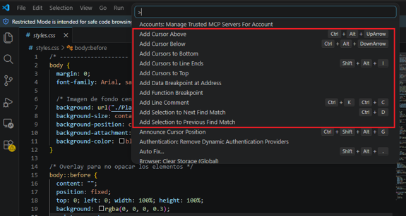
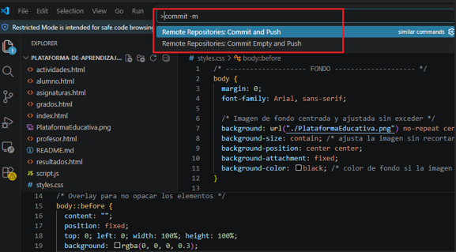
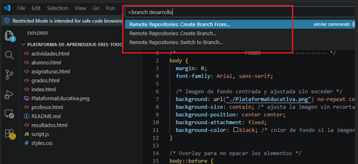
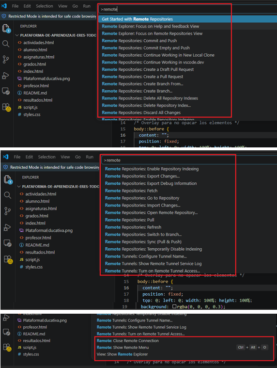
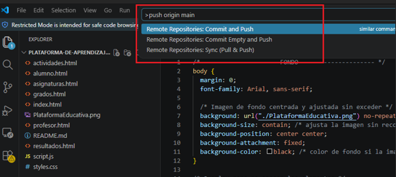
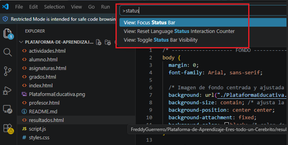
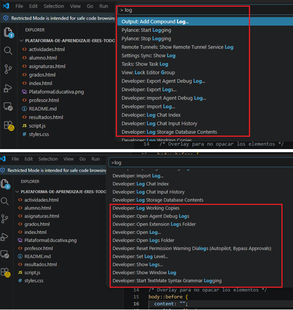
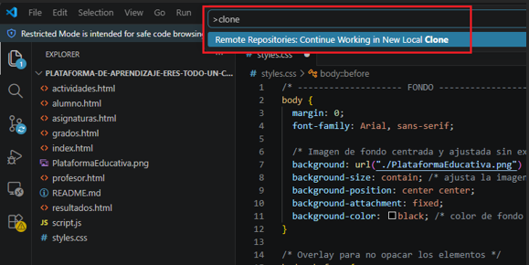

A continuación se presentan algunos comandos básicos de Git utilizados durante el desarrollo del proyecto “Eres todo un Cerebrito”, junto con ejemplos prácticos y capturas de apoyo.
El comando git add permite agregar archivos al área de preparación antes de guardar cambios.
git add .
En este proyecto se utilizó para agregar todos los archivos HTML, CSS y JavaScript antes de realizar los commits.

El comando git commit permite guardar los cambios realizados dentro del repositorio local.
git commit -m "Se agregó la página de historias"
Este comando fue utilizado para registrar las actualizaciones realizadas en las páginas del proyecto.

El comando git branch permite crear y administrar ramas dentro del proyecto.
git branch desarrollo
Gracias a este comando se pueden realizar pruebas o nuevas funcionalidades sin afectar la rama principal.

El comando git remote conecta el proyecto local con un repositorio remoto en GitHub.
git remote add origin https://github.com/FreddyGuerrerro/Plataforma-de-Aprendizaje-Eres-todo-un-Cerebrito.git
Este comando permitió vincular el proyecto desarrollado en Visual Studio Code con GitHub.

El comando git push envía los cambios realizados al repositorio remoto.
git push origin main
Fue utilizado para publicar las actualizaciones del proyecto en GitHub Pages.

El comando git status muestra el estado actual de los archivos del proyecto.
git status
Permitió verificar qué archivos habían sido modificados, agregados o pendientes de commit.

El comando git log permite visualizar el historial de commits realizados en el proyecto.
git log
Se utilizó para revisar las versiones y cambios implementados durante el desarrollo.

El comando git clone permite descargar una copia completa de un repositorio remoto.
git clone https://github.com/FreddyGuerrerro/Plataforma-de-Aprendizaje-Eres-todo-un-Cerebrito.git
Este comando facilita trabajar el proyecto en diferentes computadores o compartirlo con otros usuarios.
